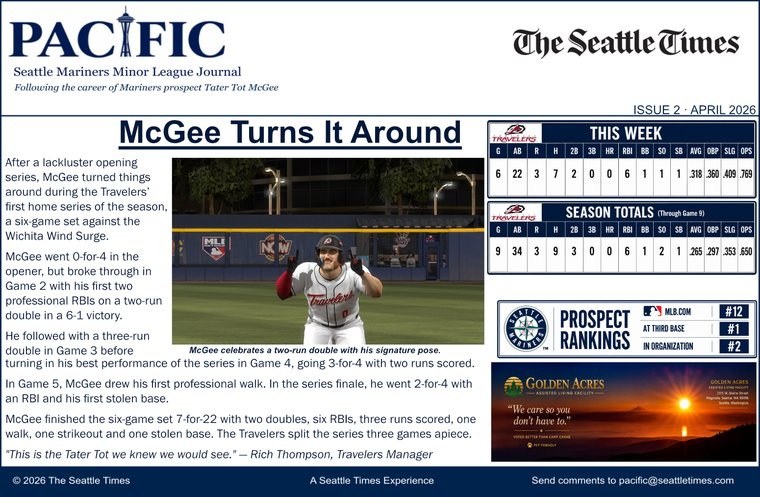
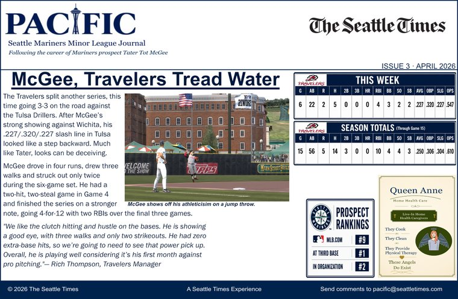
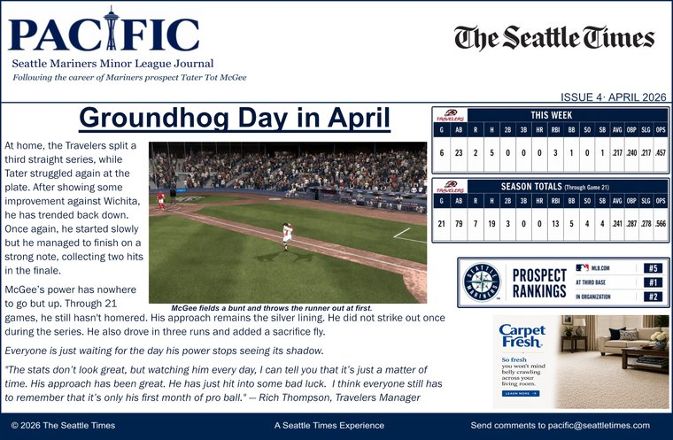
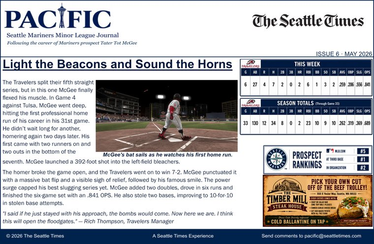
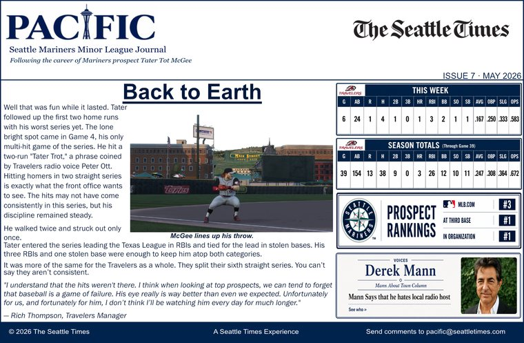
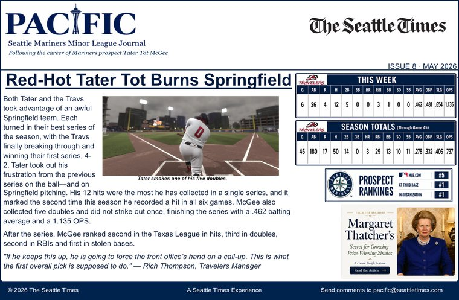

TATER TOT CHRONICLES
A family and baseball archive
Ten finished issues covering Tater's Double-A season from his first professional series through the call to Triple-A Tacoma.

The professional chapter begins with McGee's first hit and a flawless defensive debut.

First professional RBIs, first walk and first stolen base arrive in the first strong series.

A split series, four RBIs and three walks as the early season settles into a rhythm.

Another split, another slow start and a month that refuses to settle down.

McGee's best offensive series to that point: eight hits, three doubles and four steals.

The power arrives: the first two professional home runs and the 392-foot shot.

A quieter week at the plate, but the prospect ranking climbs and the plate discipline holds.

Twelve hits and five doubles in a six-game eruption.

The first professional walk-off hit caps a scorching finish to May.

The Double-A chapter closes and the call to Tacoma arrives.